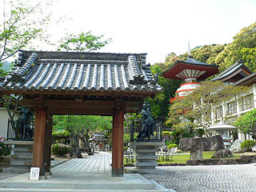
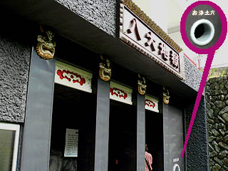
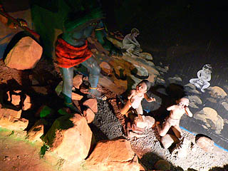
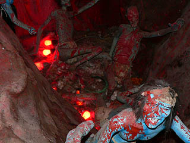

正観寺/徳島県牟岐町
徳島県を海岸沿いに南へ南へと下り、牟岐の町に着いた。
本日の目的地、正観寺である。
珍寺偏差値70,攻撃力10000,珍寺度数90度,精神的瞬間最大風速75メートル（当道場算定）を越える超絶の珍寺である。

その高ポイントの理由はひとえに本邦では稀に見る残酷さを備えた電動立体地獄を擁しているからである。
奈良の大仏でお馴染み東大寺を本山とする華厳宗の末寺だが、珍寺舎弟共にとっては我が国の電動立体地獄界における総本山として熱く支持されている寺だ。
東南アジアで見てきた数々の地獄風景を再び堪能すべく山門前に車を停め、早速地獄へ。
山門の先には何やら怪しさ満点の塔などが見えるが、後回し。
山門右手にある看板に誘われるままに地獄へ直行だぜ！
チョット水木センセ入ってるほんわかテイストな閻魔様のイラストを見る限りコワかわいい系の地獄を思い浮かべがちだが・・・
そう思う輩はそう思っておくがよい！とだけ言わせてもらいます。
で、いよいよ地獄の入口にまで辿り着いた。
上を見上げると実に普通の建物が建っている。こんな普通の建物の中にホントに八大地獄が繰り広げられているのだろうか。
とチョット不安になりつつも受付のおばさんに入場料を払う。するとおもむろにおばさんが背後のスイッチをガチャンと入れる。
あまり入場者が多くないのだろう。入場者が来た時だけ電源を入れるという合理的なシステムのようである。
確かに徳島県内でもあまり交通の便がいいわけでもないし、お遍路さんが寄るような寺でもないし。
まあ、それだけにこの寺の異様なまでの立派さが際立っているんですけど。
入口にあったお浄土穴からは早くも無気味なオーラがむんむんと。

で、早速地獄ツアーの開始。
内部に入った瞬間、この寺が日本の地獄キングであるを確信！
どぎつい色彩と照明に彩られた閻魔大王がうんうん頷いているぞ！
奪衣婆も「お待ちしてました〜」とばかりにこちらにゆっくりと振り向く。
おどろおどろしいサウンドとどぎつい照明、そしてやけにリアルな造型。アングラ劇団の芝居を見ているかのようなダウナー系のトリップ感。
素晴らしい！素晴らしすぎるぞ！
前に供えられた一升瓶が小さく見える程の豪快な閻魔大王の姿に歓喜の涙を流しつつ（ウソ）先へ進む。
お次は小さな橋が架かっておりその下を覗き込むと賽の河原なのだろう、小さな子供達が鬼に追われていた。

追い立てる鬼より壁に描かれたイラストのお子ちゃまの方が恐かったです。
・・・などとしんみりしている間もなくいきなり地獄フルスロットル状態。
早速ギッタギッタンのメッタメッタンな責め苦が繰り広げられている。
その出血量たるや軽く致死量を越えてそうな塩梅。あ、すでに致死でしたね・・・
潰され斬られ殴られ刺され、もう真っ赤っかの血まみれワールド。
等身大スケールの鬼も責め苦に予断がない。
斧で裂く、ノコギリで斬る。
煮え湯責めのコーナーでは相当熱そうなモノを浴びせられている。
お気の毒に。絶対地獄には行きたくないっすね。
暗い地獄の縁から逃げ出そうとする亡者。

でもこの責め苦からは逃げられないのだ。
ついでに見ている我々もまだまだこの地獄から逃げだせないようだ。
・・・と思ったらいきなり全照明が
バン！
と消えて真っ暗になったではないか！
何だっ！何だ？
一体何があったのかというと・・・
↓続きはこちらへ↓
正観寺；その2に続く
珍寺大道場 HOME